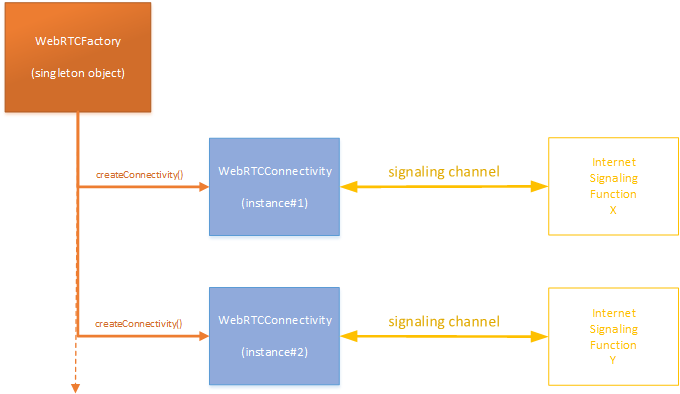

- Source:
- hp-webrtc-api.js, line 78
Members
-
<static> WebRTCFactory
The WebRTC factory.
This singleton object is the entry point of the WebRTC Client API.
It allows the user to create WebRTC connectivities to different Internet Signaling Functions.
Connectivities will then, in turn, allow the user to create WebRTC calls.
 -
- Source:
- hp-webrtc-api.js, line 84
Methods
-
<static> createConnectivity(endpointData) → {object}
Create a WebRTC connectivity.
-
Parameters:
Name Type Description endpointDataobject Mandatory WebRTC connectivity End Point Data. This data is the object returned in JSON format by the invocation done by the Web Application Server to the 'create' REST operation exposed by the EndpointWebService of the WebRTC gateway.
- Source:
- hp-webrtc-api.js, line 1856
Throws:
-
in case of immediate error.
- Type
- event:error
Returns:
The created WebRTCConnectivity object that can fire asynchronously event:error and event:event events.
- Type
- object
Example
var endpointData = {...}; ... try { ... var connectivity = WebRTCFactory.createConnectivity(endpointData); ... connectivity.connect(); ... } catch(ex) { console.error(ex); }